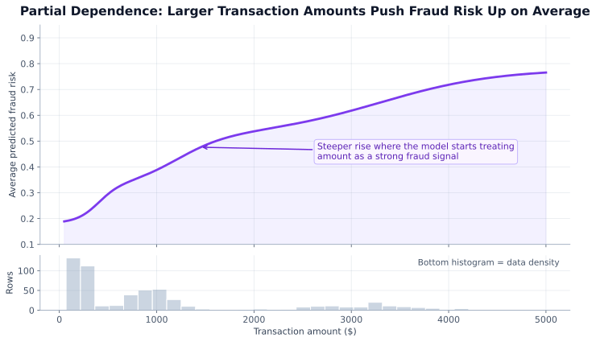
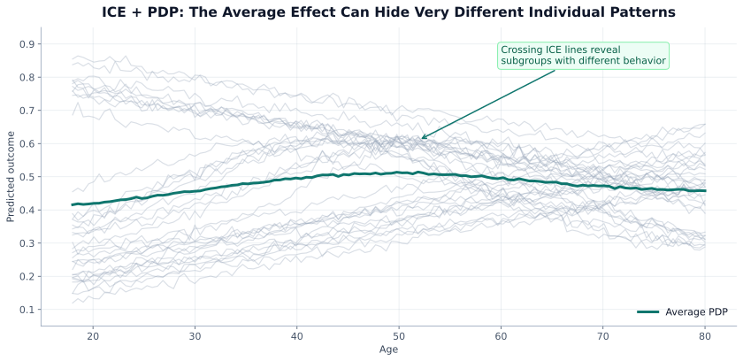
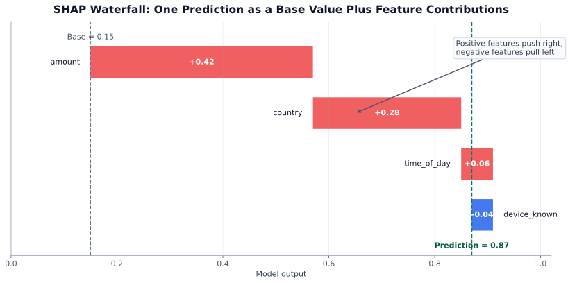
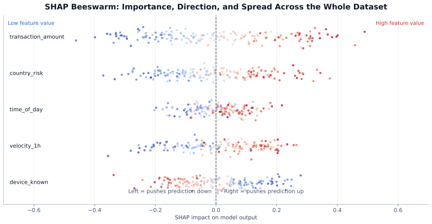

A model that performs well but can’t explain its decisions is a liability in production. Regulators demand explanations (GDPR Article 22, EU AI Act), stakeholders need trust, and engineers need debugging insight. This chapter covers the full interpretability toolkit — from global feature importance to local per-prediction explanations.
| Section | Topic |
|---|---|
| 6.1 | Explainable AI: SHAP, LIME, PDP, ICE, permutation importance |
Training a model that works is step one. Proving why it makes each prediction — to regulators, business stakeholders, and your own debugging eyes — is step two. Without explainability, high-accuracy models stay locked in notebooks; with it, they ship to production.
Consider a model that outputs “DENY loan.” Without an explanation, five problems surface simultaneously:
| Concern | The Question It Raises | Real-World Consequence |
|---|---|---|
| Regulatory compliance | Can we justify this decision to a regulator? | GDPR Art. 22 requires an explanation for automated decisions. FCRA mandates adverse-action notices for credit denials. FDA demands traceability for clinical AI. |
| Trust & adoption | Will stakeholders actually use the model? | Doctors will not follow a model they cannot interrogate. Executives will not deploy what they cannot explain to a board. |
| Debugging | Did the model learn the right signal? | A medical model once learned “patient photographed in a hospital bed” → predicted sick. Without explainability, this would never surface. |
| Bias detection | Is a protected attribute driving decisions? | High SHAP importance for zip code may encode racial bias. Explainability is how you catch proxy discrimination before it causes harm. |
| Drift monitoring | Is the model still reliable? | A shift in feature-importance rankings often precedes accuracy degradation — giving you an early warning before metrics collapse. |
Key: In regulated industries (finance, healthcare, hiring), explainability is legally required, not optional. Everywhere else, it is the fastest path to trust and faster debugging.
The landscape diagram above organises every XAI tool along two axes: scope (global vs local) and model dependence (agnostic vs model-specific). The sections below walk through each tool in detail, starting with the simplest and ending with the most powerful.
Decision trees and ensembles (Random Forest, XGBoost) compute importance natively: how much each feature reduces impurity (Gini/entropy) across all splits.
import xgboost as xgb
import pandas as pd
model = xgb.XGBClassifier().fit(X_train, y_train)
importances = model.feature_importances_
pd.Series(importances, index=X_train.columns).sort_values().plot(kind='barh')Limitations: biased toward high-cardinality and correlated features. Good for a quick baseline, but verify with SHAP or permutation importance.
More reliable than built-in importance. Shuffle one feature at a time and measure the drop in model performance:
from sklearn.inspection import permutation_importance
result = permutation_importance(model, X_val, y_val, n_repeats=10, random_state=42)
sorted_idx = result.importances_mean.argsort()[::-1]
for i in sorted_idx[:10]:
print(f"{X_val.columns[i]:30s} {result.importances_mean[i]:.4f} ± {result.importances_std[i]:.4f}")Works with any model. Respects feature correlations better than split-based importance because it measures actual prediction impact.
A PDP shows the average effect of one feature on the model’s prediction, holding all other features at their observed values. It answers: as this feature changes, how does the prediction change on average?

How it’s computed: 1. Choose a grid of values for feature f (e.g. amount = 100, 200, …, 5000) 2. For each grid value: set that feature to this value for every row in the dataset 3. Run predictions on the modified dataset → average all predictions 4. Plot average prediction vs feature value
from sklearn.inspection import PartialDependenceDisplay
import matplotlib.pyplot as plt
fig, ax = plt.subplots(figsize=(8, 4))
PartialDependenceDisplay.from_estimator(
model, X_val,
features=['transaction_amount', 'hour_of_day'],
ax=ax
)
plt.tight_layout()Limitation: PDPs average over the marginal distribution and can show unrealistic combinations when features are correlated. Use ICE plots or SHAP dependence plots when correlations are present.
ICE plots show the PDP curve for each individual sample rather than the population average. This reveals heterogeneity that PDPs mask.

# kind='individual' gives ICE, kind='average' gives PDP, kind='both' overlays
PartialDependenceDisplay.from_estimator(
model, X_val,
features=['age'],
kind='both', # overlay ICE lines + PDP
subsample=100 # plot 100 random individual lines
)Key: Always look at ICE alongside PDP. If ICE lines cross or fan out widely, the average PDP is misleading.
SHAP is the gold standard for interpretability. Based on cooperative game theory (Shapley values), it assigns each feature a fair, consistent contribution to each individual prediction.
The core idea: Treat features as players in a game where the prize is the model’s prediction. Shapley values give each player its average marginal contribution across all possible orderings — the fairest possible split of the credit.

SHAP plot types — when to use each:
| Plot | What it shows | When to use |
|---|---|---|
| Waterfall | Step-by-step SHAP breakdown for one prediction | Explaining a single decision to a stakeholder |
| Force plot | Same as waterfall, horizontal — red pushes up, blue pushes down | Interactive dashboards |
| Beeswarm / Summary | All features × all samples — importance + direction | Understanding global model behavior |
| Dependence plot | SHAP value vs raw feature value for one feature | Diagnosing non-linear or interaction effects |
| Bar plot | Mean absolute SHAP per feature | Quick global feature ranking |
import shap
# Fast for tree models
explainer = shap.TreeExplainer(model)
shap_values = explainer(X_val)
# Waterfall: single prediction breakdown
shap.plots.waterfall(shap_values[0])
# Beeswarm: all samples, all features (global view)
shap.plots.beeswarm(shap_values)
# Dependence: how one feature's SHAP value varies
shap.plots.scatter(shap_values[:, 'transaction_amount'])
# Bar: global feature importance ranking
shap.plots.bar(shap_values)Reading a beeswarm plot:

SHAP interaction values (tree models only): SHAP can decompose predictions into pairwise feature interactions — useful for detecting hidden interactions that a simple feature importance ranking would miss.
# Compute interaction values (slower, but reveals feature pairs)
shap_interaction = explainer.shap_interaction_values(X_val)
shap.summary_plot(shap_interaction, X_val, plot_type='dot')SHAP properties:
LIME explains a single prediction by training a simple linear model on perturbed samples near that point. It answers: what does the black-box model do in the neighbourhood of this one input?
from lime import lime_tabular
explainer = lime_tabular.LimeTabularExplainer(
training_data=X_train.values,
feature_names=X_train.columns.tolist(),
mode='classification'
)
explanation = explainer.explain_instance(
data_row=X_val.iloc[0].values,
predict_fn=model.predict_proba,
num_features=10
)
explanation.show_in_notebook()LIME vs SHAP:
| SHAP | LIME | |
|---|---|---|
| Theoretical grounding | Game theory (Shapley values) | Local linear approximation |
| Consistency | Globally consistent | Local only — explanations can conflict across samples |
| Speed (trees) | Fast (TreeExplainer) | Slow (needs ~1000 model calls) |
| Speed (neural nets) | Slow (DeepExplainer / Kernel) | Moderate |
| Reliability | High | Can be unstable (sensitive to perturbation scheme) |
| Best for | Production explainability | Quick ad-hoc debugging, any model |
| Tool | Best for | Model-agnostic? | Global? | Local? |
|---|---|---|---|---|
| Built-in importance | Quick baseline (trees only) | No | Yes | No |
| Permutation importance | Reliable global ranking, any model | Yes | Yes | No |
| PDP | Feature effect shape (average) | Yes | Yes | Partial |
| ICE | Per-sample feature effects, detect heterogeneity | Yes | No | Yes |
| SHAP | Production, compliance, debugging | Yes (fast for trees) | Yes | Yes |
| LIME | Quick local debug, neural nets | Yes | No | Yes |
Key: For production ML, SHAP is the industry standard. PDP + ICE give you the effect shape. LIME is a fast fallback when SHAP is too slow.
| Pitfall | Fix |
|---|---|
| Using built-in tree importance with correlated features | Correlated features split importance — use permutation importance or SHAP |
| Treating SHAP values as causal | SHAP = predictive contribution, not causal effect |
| Ignoring feature direction | A feature can push predictions up for some users and down for others |
| Relying on PDP when features are strongly correlated | Use ICE or SHAP dependence plots instead |
| Explaining the model without auditing the model | Explainability reveals what the model does, not whether it is correct or fair |
What is the difference between SHAP and LIME? When would you use each?
SHAP (SHapley Additive exPlanations) is grounded in cooperative game theory — it fairly distributes the prediction among all features using Shapley values. It provides both global and local explanations and is theoretically consistent. LIME (Local Interpretable Model-agnostic Explanations) builds a local linear surrogate around a single prediction by perturbing the input. Use SHAP when you need mathematically grounded, consistent explanations across many predictions (e.g., regulatory audits); use LIME for quick, interpretable single-prediction debugging, especially when SHAP is too slow (e.g., deep learning models on images).
Explain the difference between global and local interpretability. Give an example of each.
Global interpretability answers “which features matter most across the entire dataset?” — examples include permutation importance, SHAP summary plots, and PDP (Partial Dependence Plots). Local interpretability answers “why did the model make this specific prediction?” — examples include SHAP waterfall plots, LIME explanations, and ICE (Individual Conditional Expectation) curves. In practice, you need both: global for validation and stakeholder trust, local for debugging individual cases and regulatory compliance.
A regulator asks you to explain why a customer’s loan was denied. How do you approach this?
Use a local explanation method on the specific prediction. (1) Run SHAP on the denied application to get per-feature contributions. (2) Show which features pushed the prediction toward “deny” and by how much (e.g., “debt-to-income ratio contributed +0.35 toward denial”). (3) Verify no protected attributes (race, gender, postcode as proxy) have high SHAP values. (4) Generate a human-readable report mapping technical SHAP values to business language. This satisfies GDPR Article 22’s right to “meaningful information about the logic involved.”
Permutation importance shows feature X is important, but SHAP shows it is not. What could explain this?
Permutation importance measures how much performance drops when a feature is shuffled — it captures both direct effects and interaction effects, but is sensitive to feature correlation. If X is highly correlated with another feature Y, shuffling X alone may not hurt performance (Y compensates), yet SHAP correctly attributes the shared contribution. Alternatively, permutation importance can overstate importance for correlated features when the model uses both. Always cross-check with SHAP dependence plots and be suspicious when permutation importance and SHAP disagree — it usually indicates feature correlation.